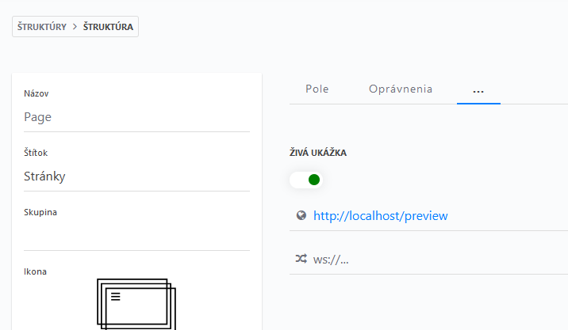

3. Back-end časti CockpitCMS
- Jedná sa o systém postavený na PHP, riot.js a Lime PHP frameworku.
- CockpitCMS sa skladá z modulov a okrem JSON API poskytuje aj PHP bootstrap, ktorý umožňuje k nemu pristupovať alebo ho rozširovať.
- CSS je riešené okrem vlastných rozšírení čiste cez UIKIT v2.
Najdôležitejšie umiestnenia
Všetky sú v public/cockpit
| Miesto | K čomu slúži |
|---|---|
| assets/app/css | Cockpit CSS + vlastné rozšírenia cez custom.scss, ktoré je skompilované nepriamo do .css cez style.less |
| assets/app/media/icons | Ikony dostupné v CockpitCMS ako ikony pre štruktúry alebo komponenty. |
| assets/lib/font-awesome-field | Plne vlastná knižnica pre implementáciu fontawesome výberového poľa importovaná do components.js nižšie. |
| config/* | Obsahuje skrytú konfiguráciu v yaml (je vcelku zle zdokumentovaná) pre CMS aj pre addony. Je tu aj zložka obsahujúca všetky lokalizácie administračného rozhrania do iných jazykov. |
| addons | Addons sú rozšírenia, niektoré (Layout-Components) vcelku dosť modifikované od ich pred-inštalačného stavu. |
| lib | Framework a knižnice na ktorých je Cockpit stavaný. Tu som nikdy nič nemenil a asi ani meniť nebudem, radšej nechytať. |
| modules | Jednotlivé druhy uloženia dát (štruktúry, regióny, formuláre) a ich implementácie. |
| modules/Collections | Štruktúry - Občasná vlastná úprava. |
| modules/Cockpit/components.js | riot.js implementácia každého jedného druhu poľa z ktorého sa dajú komponenty/štruktúry zložiť. Veľmi silná vlastná úprava (napr. vlastné fontawesome a url polia) |
| storage | Hlavné úložisko, flat-file databázy, cache, miesto uploadu všetkých assetov, nechytať priamo, len cez CMS samotné! |
Pred publikovaním
- Skontrolovať existenciu a validitu
.htaccessv dôležitých umiestneniach, hlavne aby .sqlite bolo blokované vpublic/cockpitapublic/api/privatemalodeny from all - Nezverejňovať
.css.mapa.js.mapsúbory
ftpsync.js exclude filtre nemusia byť správne nastavené.
Prepojenie s public/index.php
V public/index.php je importovaný CockpitCMS bootstrap a využitý cockpitql addon pre kontrolu či slug existuje v zozname stránok.
CockpitQL addon bol dodatočne rozšírený v súbore CockpitQL/Types/FieldType.php o case:"moderation", aby mohli byť slug filtrované podľa toho či boli addonom Moderation publikované. Takto sa zaručí že crawleri dostanú 404 na nepublikovaných stránkach.
WEDOS / localhost Live Preview
|  |
|---|
| Treba správne nastaviť adresu v nastaveniach štruktúry. |
V Preview.svelte sú povolené zdroje nastavené na:
- http://localhost
- https://strukshow.com
- http://dev.strukshow.com
A povolený event je nastavený na: cockpit:collections.preview
Nepodporované .htaccess hodnoty pre WEDOS
Prekvapivo z celého komplexného .htaccess v public/cockpit nefunguje len jedna vec, ktorá spôsobuje 500 Internal Server Error:
Options -MultiViews
Chyba nastáva aj ak je možnosť v podmienke <IfModule mod_negotiation.c>, ktorá predvolene chýba. Možnosť je teda odkomentovaná.
Úprava bootstrap.php ciest pre WEDOS a path_check.php
V súbore bootstrap.php sú definované lokálne cesty pre php na základe COCKPIT_DOCS_ROOT a následne od neho sa odvíjajú rozdielom s COCKPIT_DIR cesty v URL adresách uložené v COCKPIT_BASE_URL.
Pre debugovanie ciest je vhodné použiť path_check.php.
Správne predvolené zobrazenie na localhost:
COCKPIT_DIR: C:/Websites/strukshow.com v2 (svelte)/public/cockpit
WEDOS_DOCS_ROOT: C:/Websites/strukshow.com v2 (svelte)/public
COCKPIT_DOCS_ROOT: C:/Websites/strukshow.com v2 (svelte)/public
COCKPIT_DOCS_ROOT_PREV: C:/Websites/strukshow.com v2 (svelte)/public
COCKPIT_BASE: cockpit
COCKPIT_BASE_URL: /cockpit
COCKPIT_BASE_ROUTE: /cockpit
Zlé predvolené zobrazenie na WEDOSe:
COCKPIT_DIR: /data/web/virtuals/232327/virtual/www/domains/dev.strukshow.com/cockpit
WEDOS_DOCS_ROOT: /data/web/virtuals/232327/virtual/www/domains/dev.strukshow.com
COCKPIT_DOCS_ROOT: /data/web/virtuals/232327/virtual/www
COCKPIT_DOCS_ROOT_PREV: /data/web/virtuals/232327/virtual/www
COCKPIT_BASE: domains/dev.strukshow.com/cockpit
COCKPIT_BASE_URL: /domains/dev.strukshow.com/cockpit
COCKPIT_BASE_ROUTE: /domains/dev.strukshow.com/cockpit
Kvôli zle definovanému $_SYSTEM["DOCUMENT_ROOT"] majú jednotlivé adresy dodatočne vložené kompletne zbytočné údaje o doméne (prekvapivo adresy stále fungujú). Preto bol pridaný $WEDOS_DOCS_ROOT a nahradený výpočet $COCKPIT_DOCS_ROOT:
// Default implementation (doesn't work properly on WEDOS)
$COCKPIT_DOCS_ROOT = str_replace(DIRECTORY_SEPARATOR, '/', isset($_SERVER['DOCUMENT_ROOT']) ? realpath($_SERVER['DOCUMENT_ROOT']) : dirname(__DIR__));
// WEDOS implementation (works on localhost as well)
$WEDOS_DOCS_ROOT = str_replace("/cockpit","",$COCKPIT_DIR);
$COCKPIT_DOCS_ROOT = str_replace(DIRECTORY_SEPARATOR, '/', isset($WEDOS_DOCS_ROOT) ? realpath($WEDOS_DOCS_ROOT) : dirname(__DIR__));
WEDOS po úprave (localhost zostal rovnaký ako predtým):
COCKPIT_DIR: /data/web/virtuals/232327/virtual/www/domains/dev.strukshow.com/cockpit
WEDOS_DOCS_ROOT: /data/web/virtuals/232327/virtual/www/domains/dev.strukshow.com
COCKPIT_DOCS_ROOT: /data/web/virtuals/232327/virtual/www/domains/dev.strukshow.com
COCKPIT_DOCS_ROOT_PREV: /data/web/virtuals/232327/virtual/www/domains/dev.strukshow.com
COCKPIT_BASE: cockpit
COCKPIT_BASE_URL: /cockpit
COCKPIT_BASE_ROUTE: /cockpit